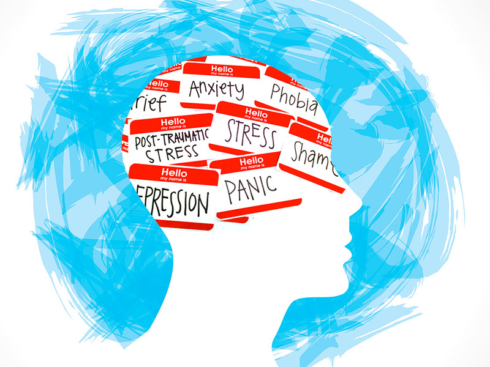
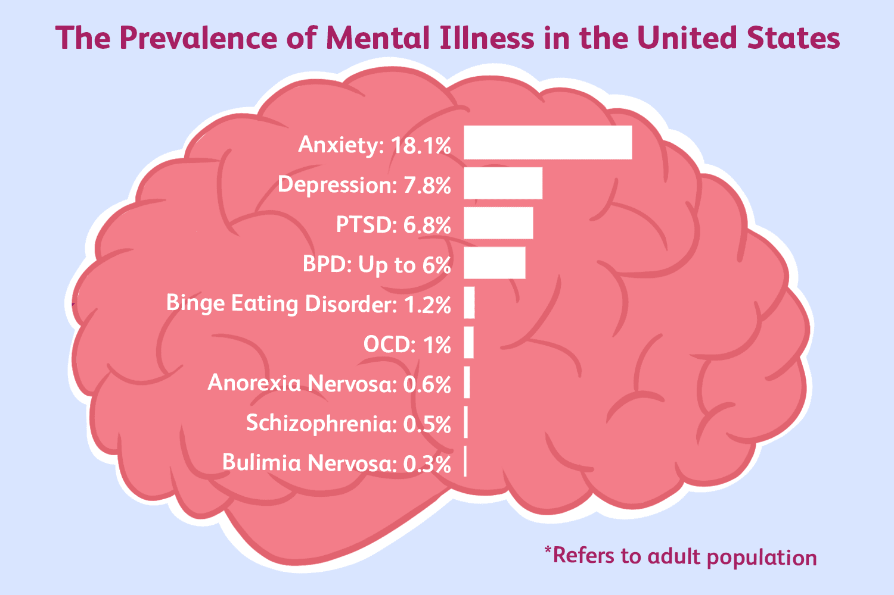
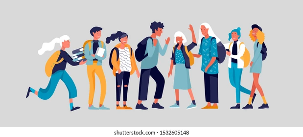
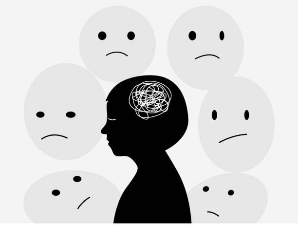

Introduction
Mental health is the root of all healthy living since it incorporates our emotional, psychological, and social spheres of activity. It affects how we think, feel, and behave, therefore having impacts that stretch into every corner of our lives, from work to relations. Good mental health allows one to cope with stress, make important decisions, and contribute to the community. As much as that may be so, millions across the world suffer from mental disorders such as anxiety disorder, major depression, and bipolar disorder. The content elaborates on discrete mental health challenges that affect teenagers, the two-edged role of social media, the need to reduce stigma, and how vital support systems are for those in need. As a teenager, I remember feeling overwhelmed by academic pressures and social expectations. One of my friends struggled silently with anxiety, afraid to seek help due to the stigma surrounding mental health. This experience highlighted for me the critical importance of addressing mental health issues early and openly.
Overview of Mental Health
Definition and Common Conditions
The definition of health was the basis for the definition of mental health, which is described as a state of well-being where every person realizes their abilities, copes with the normal stresses of life, works productively, and contributes to their community. It is not necessarily an absence of mental disorders but rather complete physical, mental, and social well-being. Some common mental health conditions include anxiety disorders, depression, bipolar disorder, and schizophrenia. These types of disorders can cause severe distress and impact daily functioning and are, therefore, pervasive in effects on personal and professional life.
According to the World Health Organization, the state allows human beings to cope with life's various stresses, realize their abilities, learn well and work well, and hence contribute to their communities. Mental health conditions range from very mild to very severe and may affect any person regardless of age, sex, and socioeconomic status. It is estimated that around 2019, approximately 970 million people are living in the world with different mental disorders. Anxiety and depression disorders are very common (World Health Organization, 2023).
Mental Health and Teenagers
Challenges Faced by Teenagers
Developmental changes, peer pressures, and academic stressors come with adolescence, which distinctly affects the mental health of teenagers. In this case, social media is an increasingly relevant context for teenagers. While it offers support, it also introduces a host of new challenges. Issues like cyberbullying, unrealistic body image ideals, and social comparison are highly harmful to the mental health of teenagers and increase the potential for anxiety, depression, and low self-esteem.
It is estimated that over 1 in 5 youth aged 13-18 years either currently or at some point during their life had a seriously debilitating mental illness according to the reports of the Centers for Disease Control and Prevention (CDC). Some of the contributing factors include adverse childhood experiences, trauma, chronic medical conditions, and loneliness or isolation. How this will be demonstrated is going to vary among teenagers, thus giving rise to different mental health issues (CDC, 2023).
Stigma and Awareness
Effects of Stigma
Stigma towards mental health problems can act as a barrier to help-seeking and causes discrimination and social isolation. Stigmatization can be reduced with education and awareness raising, in combination with open discussion of mental health. World Mental Health Day and national campaigns like "Time to Change" raise awareness and promote understanding and acceptance to help break down some of the barriers to treatment and support.
According to the WHO, those living with mental health conditions are stigmatized, discriminated against, and denied basic human rights. This adds to reluctance to seek help, and therefore, no treatment for mental health problems—problems that might deteriorate in case of no treatment. By reducing stigma, we would encourage more people to get needed help for them and promote a culture of understanding and support (World Health Organization, 2023).
Campaigns and Initiatives
Other interventions include campaigns and awareness and stigma reduction programs. For example, the World Health Organization's World Mental Health Day is an international arena to build mental health literacy, ensuring increased awareness, and mobilizing support for improvement as well as developing and championing the wanted stigma of the social community. National campaigns including, the Time to Change in the UK are driven toward altering mental health attitudes via public engagement and individual narratives (World Health Organization, 2023). Such campaigns play a significant role in mental well-being and call people to action in seeking help and assistance.
Support Systems
Importance of Support
Families, friends, and the community are essential in supporting individuals with mental health issues. Positive relationships provide support emotionally and reduce feelings of loneliness, which impact therapy success. There are several places where help can be derived for mental health-related issues; these include helplines, counseling, and online support groups. For more complex networks in terms of support and educational services, there are NAMI and Mental Health America organizations.
The CDC refers to support systems as one-way mental health conditions are managed. A corporation-ID theatrical smidgen within family and/or friends can go a long way in recovery and recent well-being (CDC, 2023). Support groups within community organizations and online forums provide a sense of belonging and understanding that might be especially vital to those living with mental health issues.
Resources Available
There are loads of mental health resources: major hotlines, like the National Suicide Prevention Lifeline, in place to help support people in crisis; counseling services that provide professional support and guidance on how to manage mental health conditions; online communities and support groups that can help provide peer support and a feeling of belonging; and organizations like NAMI and Mental Health America that provide educational resources, advocacy, and assistance to people and families with a mental health condition (CDC, 2023).
Mental Health in the Digital Age
Benefits and Drawbacks
Digital tools and social media may either improve mental health or have a negative effect on it. The positive side is that they offer support and share information, whereas the negative side could be cyberbullying and social comparison. Apps like Headspace and Calm provide mindfulness and relaxation exercises, while sites like MentalHealth.gov have all sorts of resources for those who seek help.
The digital age presents new challenges and opportunities in the area of mental health. On the one hand, digital tools provide easy access to mental health resources and support from the comfort of one's home. On the other hand, life with continuous connectivity and mounting stressors brought on by exposure to social media instigate anxiety. Maintaining balance and using digital tools in ways that support one's mental health is critical.
Supportive Apps and Websites
There are many apps and websites designed to support mental health. Apps like Headspace and Calm offer guided meditation and mindfulness exercises that can help reduce stress and anxiety. Websites like MentalHealth.gov provide valuable information and resources on various mental health conditions and treatments. These digital tools can be valuable additions to traditional mental health support systems (SAMHSA, 2023).
Personal Stories and Case Studies
Real-Life Examples
Personal stories raise awareness and fight stigma. Real-life examples of people who have gone through mental health challenges show how individuals can get out of hard times: the hope and encouragement offered to others by the depiction of the importance of support, both in and out of the crisis, and potential recovery. Such stories can help humanize mental illness issues and encourage others to seek help from support.
Consider the story of John, a high school student who faced severe depression due to bullying. With the help of a supportive school counselor and a mental health awareness program, John was able to seek treatment and eventually became an advocate for mental health in his community. His story demonstrates the power of support systems and the positive impact of mental health initiatives.
FAQ
Mental health includes our emotional, psychological, and social well-being. It affects how we think, feel, and act. Mental health also helps determine how we handle stress, relate to others, and make choices. Mental health is important at every stage of life, from childhood and adolescence through adulthood.
Improving mental health involves regular exercise, healthy eating, sufficient sleep, and seeking professional help when needed. Other ways to improve mental health include practicing mindfulness or meditation, maintaining a positive outlook, connecting with others, and engaging in activities that you enjoy. If you’re struggling, talking to a mental health professional can provide support and guidance tailored to your specific needs.
Support can be found through mental health professionals, such as therapists or counselors, who provide individualized treatment and strategies for coping with mental health issues. Online support groups and forums can also offer a sense of community and shared experiences. Additionally, community resources such as local mental health organizations, hotlines, and peer support groups can provide immediate and ongoing support.
Conclusion
Mental health is a critical aspect of overall well-being, affecting every stage of life. Teenagers, in particular, may face unique challenges that require targeted support and intervention. Huge trajectories of possible improvement exist in decreasing stigma through awareness and education on mental illness, support systems, and digital tools—a few areas that need to move up a level of wellness toward mental health. People can create a supportive and understanding environment for everyone by sharing their personal stories and positive mental health practices.
Testimonials and Quotes
"Seeking help was the best decision I ever made. My life has completely changed for the better."
- Alex R."The support I received was incredible. I now have the tools to manage my anxiety effectively."
- Jamie K.Mental Health Quiz
Video Gallery - TED TALK
Thomas Insel: Toward a new understanding of mental illness
Impact of Social Media
Social media can proffer support and community, but it also contributes to mental health issues. Cyberbullying has become a severe problem that has wrappingly caused severe emotional stress to so many people. What's more, there are highly unrealistic body images and lifestyles on social media platforms that can turn teenage minds into negatively perceiving and developing low self-esteem. The constant comparison with peers and the pressure to maintain a perfect online image may contribute to anxiety and depression (CDC, 2023).